Random-level v2
A local repair at a sampled level, with fewer than three expected rotations per insertion under independent uniform rolls from empty. Compare the original policy and v2 from 1,000 to 128,000 keys.
At 128,000 random keys: 7.09 → 1.26 rotations per key, original to v2, across 3 paired trials per version. This measured result is separate from the expected rotation proof below.
What changes in v2
The original policy samples a target level near log₂(n), then rotates the new leaf all the way there. Its cost is max(0, insertion depth − target). A growing gap between the actual search path and that idealized level causes growing rotation counts.
V2 keeps the same 64-bit sampler, count and priority extrema. It changes how the tree is repaired:
- Choose a repair level using the previous priority interval, then update the count and extrema.
- A strict new minimum priority promotes the inserted leaf to the root. A new maximum stays a leaf.
- For other insertions above or at the chosen level, do nothing. If the leaf is one edge below it, rotate once.
- Otherwise walk to the ancestor two edges below the repair level. A straight path promotes its parent once; a bent path promotes the selected ancestor twice.
The selected subtree root reaches the repair level; the inserted leaf need not reach it. Equal priorities are not strict records. Duplicate keys consume no bits or rotations.
Why expected rotations are below three
Assume an initially empty tree and independent uniformly distributed priority rolls. With k previous successful insertions, a strict new minimum occurs with probability at most 1/(k+1), including finite-priority ties. It costs at most k rotations; every other insertion costs at most two.
R ≤ 2 + k · indicator(strict new minimum) E[R] ≤ 2 + k/(k+1) < 3
This expectation is over the whole priority history. It is not a worst-case limit of two or three rotations, or a bound conditioned on every possible existing tree. Rare record insertions can still take a full path of rotations.
The rotation bound does not guarantee logarithmic depth or constant rebalancing time. Walking to the repair can take O(h) ancestor steps; sampling uses O(log n) integer-band iterations. No priorities or sizes are added to nodes.
Original vs v2: paired reports
Both versions use the same input and rotation seeds for each paired trial. The original records are selected from the archived dataset; v2 was measured in a separate batch. No recorded original result is replaced.
Dashed gray: log₂(n), an unscaled numeric guide behind every measured curve. Logarithmic x scale; y uses log(1 + value). Whiskers show ±1 standard error. Only fully completed groups are plotted; tables retain incomplete statuses.
Random sequences


Every paired measurement for random
| Version | Keys | Status | Trials | Rot/key | Rot SE | Max rot | Mean depth | Mean height | Decisions / steps per key | Bits/key |
|---|---|---|---|---|---|---|---|---|---|---|
| random-level | 1,000 | complete | 3/3 | 4.51 | 0.254 | 19 | 11.3 | 21.3 | 0 | 64 |
| random-level | 16,000 | complete | 3/3 | 5.42 | 0.0458 | 25 | 15.9 | 30.7 | 0 | 64 |
| random-level | 128,000 | complete | 3/3 | 7.09 | 0.215 | 33 | 21.5 | 41.3 | 0 | 64 |
| random-level-v2 | 1,000 | complete | 3/3 | 1.18 | 0.0326 | 15 | 9.97 | 19.3 | 2.43 | 64 |
| random-level-v2 | 16,000 | complete | 3/3 | 1.23 | 0.00788 | 17 | 14.6 | 27.7 | 3.25 | 64 |
| random-level-v2 | 128,000 | complete | 3/3 | 1.26 | 0.012 | 20 | 18.9 | 35 | 4.03 | 64 |
Increasing sequences


Every paired measurement for increasing
| Version | Keys | Status | Trials | Rot/key | Rot SE | Max rot | Mean depth | Mean height | Decisions / steps per key | Bits/key |
|---|---|---|---|---|---|---|---|---|---|---|
| random-level | 1,000 | complete | 3/3 | 0.992 | 0.000882 | 9 | 12.9 | 27.3 | 0 | 64 |
| random-level | 16,000 | complete | 3/3 | 0.999 | 2.08e-05 | 14 | 21.2 | 43.3 | 0 | 64 |
| random-level | 128,000 | complete | 3/3 | 1 | 4.51e-06 | 16 | 27.2 | 57 | 0 | 64 |
| random-level-v2 | 1,000 | complete | 3/3 | 0.988 | 0.001 | 11 | 11.4 | 23.3 | 1.54 | 64 |
| random-level-v2 | 16,000 | complete | 3/3 | 0.999 | 0 | 15 | 18 | 38.3 | 1.34 | 64 |
| random-level-v2 | 128,000 | complete | 3/3 | 1 | 0 | 17 | 22.1 | 52 | 1.27 | 64 |
Decreasing sequences


Every paired measurement for decreasing
| Version | Keys | Status | Trials | Rot/key | Rot SE | Max rot | Mean depth | Mean height | Decisions / steps per key | Bits/key |
|---|---|---|---|---|---|---|---|---|---|---|
| random-level | 1,000 | complete | 3/3 | 0.991 | 0.000333 | 9 | 13.5 | 26.7 | 0 | 64 |
| random-level | 16,000 | complete | 3/3 | 0.999 | 2.08e-05 | 14 | 21.7 | 41 | 0 | 64 |
| random-level | 128,000 | complete | 3/3 | 1 | 2.6e-06 | 15 | 27 | 56.3 | 0 | 64 |
| random-level-v2 | 1,000 | complete | 3/3 | 0.99 | 0.000333 | 10 | 12.4 | 26.7 | 0.931 | 64 |
| random-level-v2 | 16,000 | complete | 3/3 | 0.999 | 2.08e-05 | 14 | 18.2 | 38.7 | 1.32 | 64 |
| random-level-v2 | 128,000 | complete | 3/3 | 1 | 2.6e-06 | 17 | 22.4 | 49.3 | 1.03 | 64 |
Converging sequences
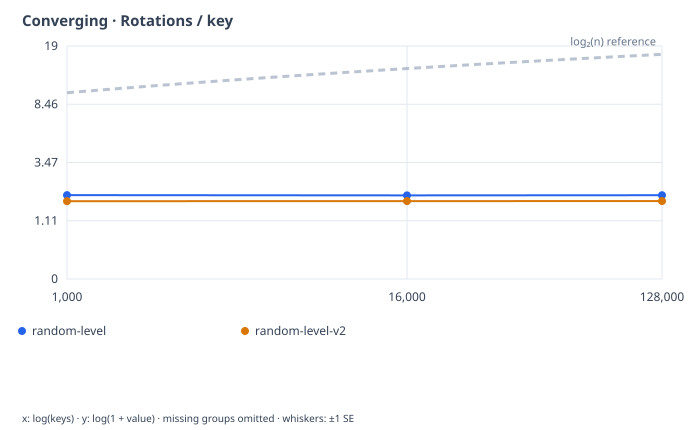
Download SVG
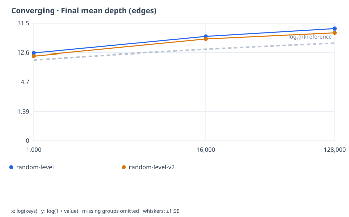
Download SVG
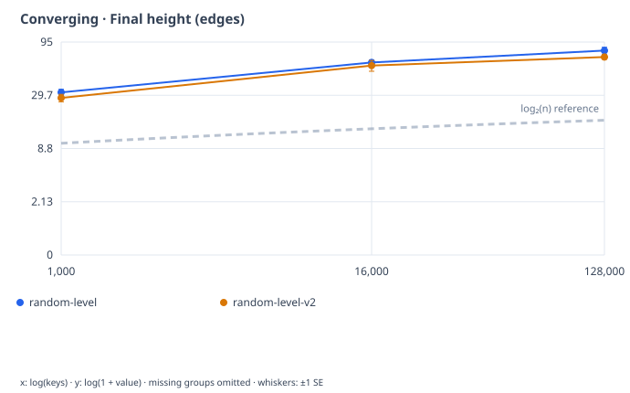
Download SVG
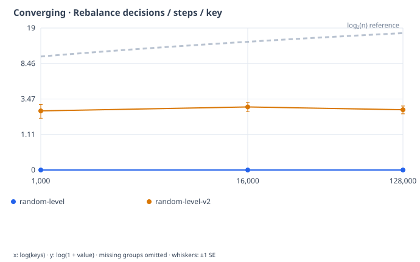
Download SVG
Every paired measurement for converging
| Version | Keys | Status | Trials | Rot/key | Rot SE | Max rot | Mean depth | Mean height | Decisions / steps per key | Bits/key |
|---|---|---|---|---|---|---|---|---|---|---|
| random-level | 1,000 | complete | 3/3 | 1.94 | 0.0121 | 11 | 12.4 | 31.7 | 0 | 64 |
| random-level | 16,000 | complete | 3/3 | 1.93 | 0.00278 | 14 | 21 | 61 | 0 | 64 |
| random-level | 128,000 | complete | 3/3 | 1.94 | 0.000882 | 18 | 26.8 | 79 | 0 | 64 |
| random-level-v2 | 1,000 | complete | 3/3 | 1.72 | 0.00448 | 12 | 11.3 | 28 | 2.48 | 64 |
| random-level-v2 | 16,000 | complete | 3/3 | 1.72 | 0.000562 | 17 | 19.4 | 57 | 2.78 | 64 |
| random-level-v2 | 128,000 | complete | 3/3 | 1.72 | 0.000216 | 20 | 23.4 | 68.7 | 2.57 | 64 |
Pairs sequences
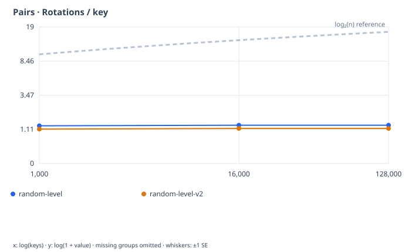
Download SVG
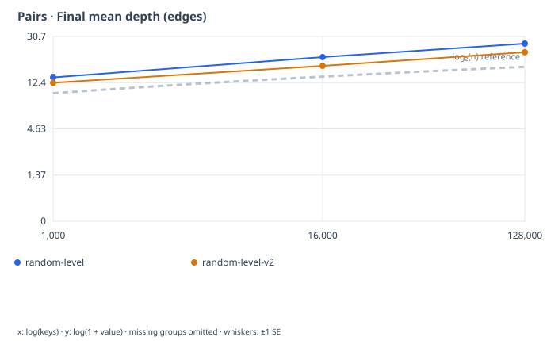
Download SVG
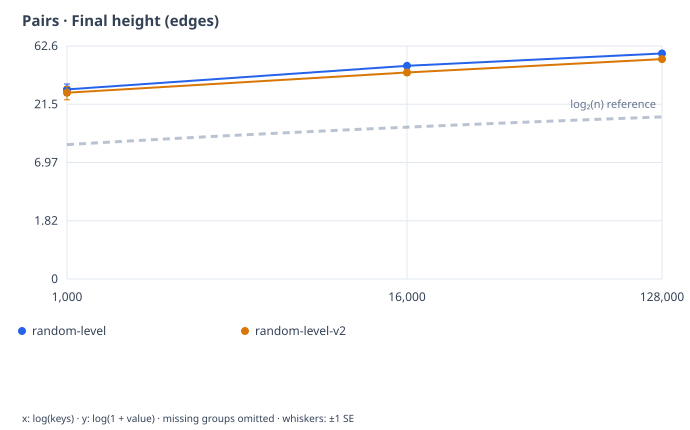
Download SVG
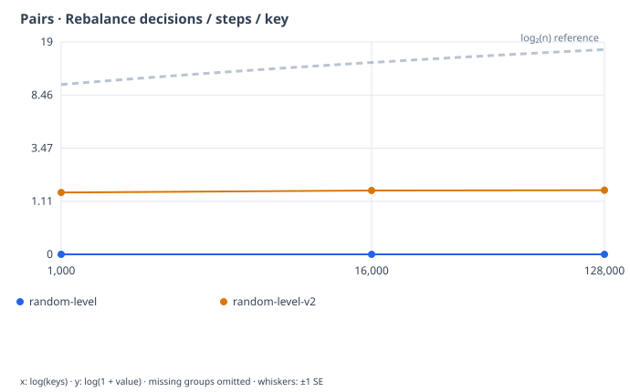
Download SVG
Every paired measurement for pairs
| Version | Keys | Status | Trials | Rot/key | Rot SE | Max rot | Mean depth | Mean height | Decisions / steps per key | Bits/key |
|---|---|---|---|---|---|---|---|---|---|---|
| random-level | 1,000 | complete | 3/3 | 1.29 | 0.0123 | 10 | 13.8 | 28.3 | 0 | 64 |
| random-level | 16,000 | complete | 3/3 | 1.32 | 0.00541 | 16 | 20.6 | 43.7 | 0 | 64 |
| random-level | 128,000 | complete | 3/3 | 1.32 | 0.0014 | 18 | 26.8 | 54.7 | 0 | 64 |
| random-level-v2 | 1,000 | complete | 3/3 | 1.13 | 0.0111 | 10 | 12.3 | 26.7 | 1.39 | 64 |
| random-level-v2 | 16,000 | complete | 3/3 | 1.16 | 0.00123 | 13 | 17.3 | 38.7 | 1.46 | 64 |
| random-level-v2 | 128,000 | complete | 3/3 | 1.16 | 0.000413 | 17 | 22.6 | 49.3 | 1.47 | 64 |
Bitonic sequences
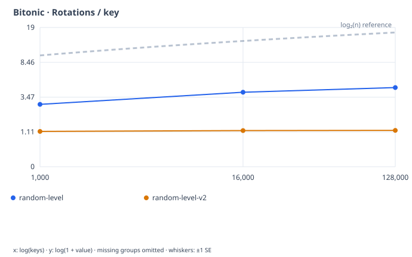
Download SVG
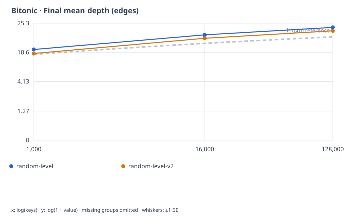
Download SVG
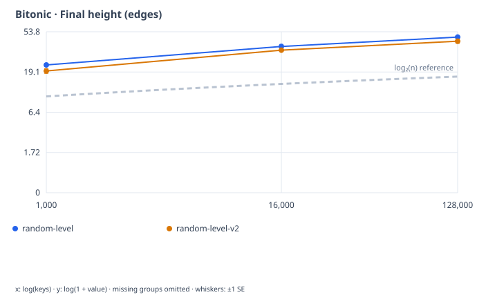
Download SVG
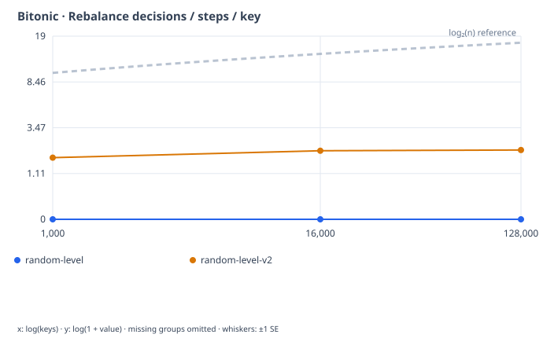
Download SVG
Every paired measurement for bitonic
| Version | Keys | Status | Trials | Rot/key | Rot SE | Max rot | Mean depth | Mean height | Decisions / steps per key | Bits/key |
|---|---|---|---|---|---|---|---|---|---|---|
| random-level | 1,000 | complete | 3/3 | 2.83 | 0.0647 | 16 | 11.6 | 23 | 0 | 64 |
| random-level | 16,000 | complete | 3/3 | 3.97 | 0.0959 | 24 | 18 | 37 | 0 | 64 |
| random-level | 128,000 | complete | 3/3 | 4.49 | 0.0261 | 26 | 22.5 | 47 | 0 | 64 |
| random-level-v2 | 1,000 | complete | 3/3 | 1.14 | 0.0181 | 14 | 10.3 | 19.7 | 1.74 | 64 |
| random-level-v2 | 16,000 | complete | 3/3 | 1.18 | 0.0129 | 15 | 16.3 | 33.7 | 2.07 | 64 |
| random-level-v2 | 128,000 | complete | 3/3 | 1.19 | 0.00995 | 18 | 20.3 | 42.3 | 2.11 | 64 |
Runs sequences
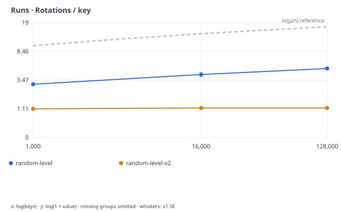
Download SVG
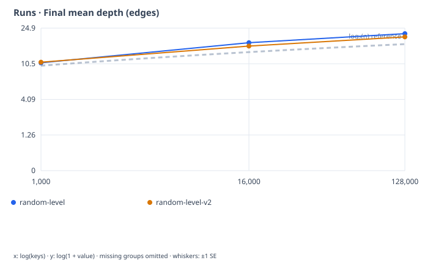
Download SVG
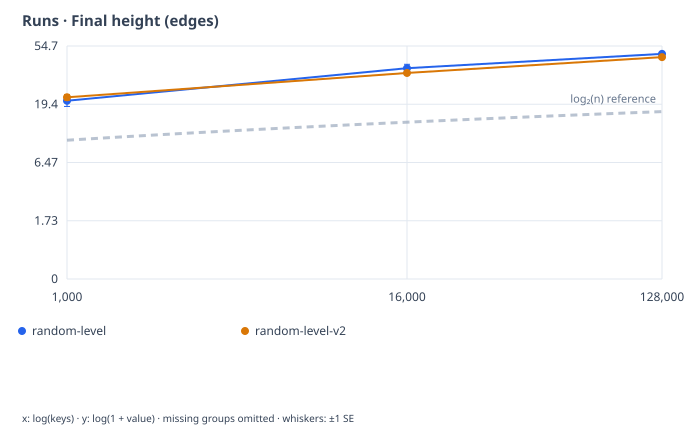
Download SVG
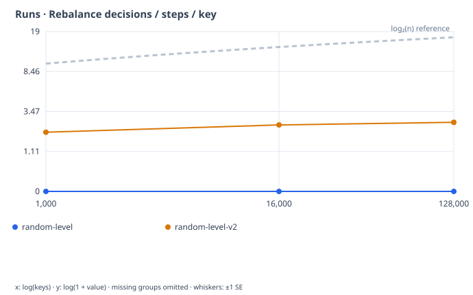
Download SVG
Every paired measurement for runs
| Version | Keys | Status | Trials | Rot/key | Rot SE | Max rot | Mean depth | Mean height | Decisions / steps per key | Bits/key |
|---|---|---|---|---|---|---|---|---|---|---|
| random-level | 1,000 | complete | 3/3 | 3.02 | 0.0949 | 19 | 10.7 | 20.7 | 0 | 64 |
| random-level | 16,000 | complete | 3/3 | 4.18 | 0.226 | 32 | 17.6 | 37 | 0 | 64 |
| random-level | 128,000 | complete | 3/3 | 5.05 | 0.0424 | 38 | 21.8 | 47.7 | 0 | 64 |
| random-level-v2 | 1,000 | complete | 3/3 | 1.11 | 0.0192 | 18 | 10.9 | 22 | 2.03 | 64 |
| random-level-v2 | 16,000 | complete | 3/3 | 1.17 | 0.017 | 15 | 16.2 | 34 | 2.48 | 64 |
| random-level-v2 | 128,000 | complete | 3/3 | 1.16 | 0.0106 | 20 | 20.2 | 45 | 2.65 | 64 |
Reports and source data
Raw records retain their original timings for inspection. The comparative graphs and tables show operation counts and tree shapes; no cross-version timing comparison is made.
How the comparison was recorded
Match n, order, trial, seed and order_seed; the first three archived trials at each selected size. This comparison records operation counts and final shapes, not cross-run timing comparisons.
Each completed tree passes ordering, parent-link, cycle and complete key-set checks. Standard errors are across trial seeds, conditional on the fixed input permutation. V2 decisions / steps include ancestor visits; the original policy has no such decision visits. Maximum rotations can exceed two because strict new minima still reach the root.
Finite depth and height results do not prove a balance guarantee. The linked documentation contains the derivation, limits, exact policy steps and reproduction commands.